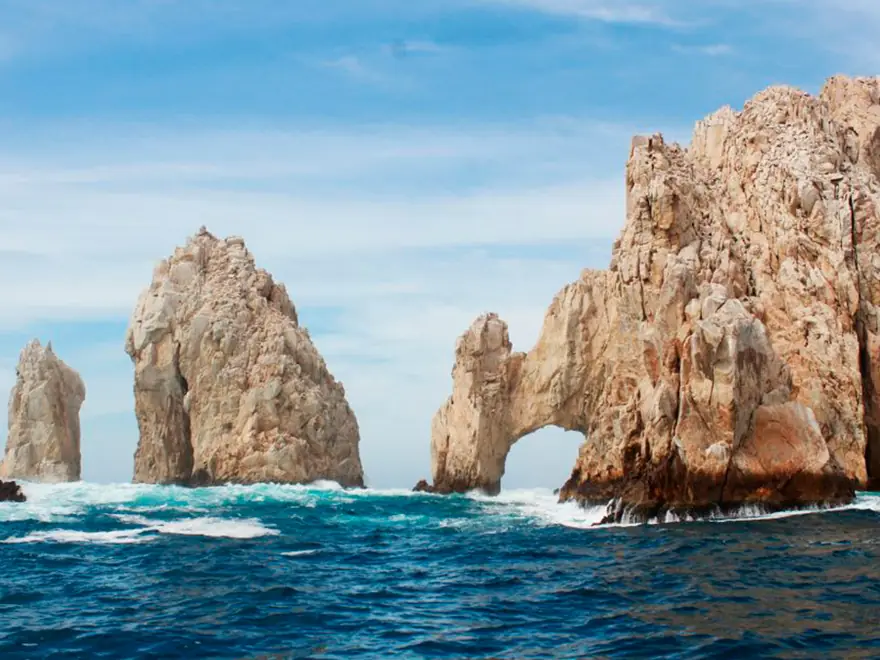

2h Mar y snorkelPlaya del Amor y El Arco en barco de fondo de cristal
Barco de fondo de cristal hasta el Arco y desembarque en Playa del Amor. Tú decides cuánto te quedas: te recogemos a la hora que acordemos.
Desde
$30$40
USD por adulto · menores $20